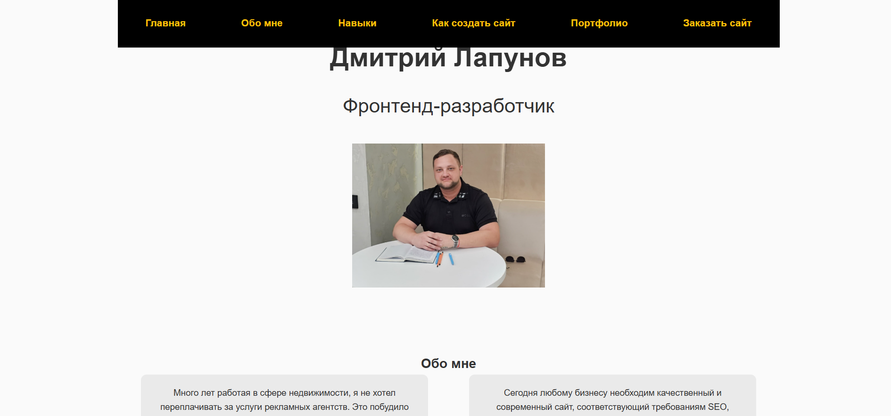

-

Мой сайт
Ссылка на сайт -
Мой сайт
Ссылка на сайт -
Мой сайт
Ссылка на сайт -
Мой сайт
Ссылка на сайт -
Мой сайт
Ссылка на сайт -
Мой сайт
Ссылка на сайт
Лапунов Дмитрий
Frontend-Разработчик
Обо мне
Я много лет проработал в сфере недвижимости. Как и многие частные агенты, я не хотел тратить лишние деньги на рекламщика. Поэтому я прошел обучение на интернет-маркетолога. Тут я понял что нужно еще делать сайты. При чем не на обычном конструкторе, а писать полноценные сайты. Я стал задумываться, а почему такие большие суммы за создание одного сайта. И решил научиться писать сайты. Как оказалось, это невероятное колличество знаний и умений.
Сейчас я уже полностью овладел всем основам Фронтенд-разработки. Умею писать различные сайты. И готов разработать полноценный сайт под ваш заказ.
Сейчас каждому бизнесу, даже саомому маленькому, нужен хороший
современный сайт, который отвечает всем требованиям CEO - оптимизации.
И поверьте, всё не так просто, как говорят вам ваши маркетологи.
Есть разные варианты создания сайтов, они все различаются ценой,
скоростью, сложностью создания. И многие думают, что дешёвый и простой
лендинг, собранный на бесплатном конструкторе, обеспечит им большой
поток клиентов. Однако это совершенно наоборот.
Мои навыки
- HTML5
- CSS3
- JavaScript
- Git
Варианты создания сайтов:
Давайте рассмотрим варианты создания сайтов, и вы поймете почему нужно заказывать сайт у специалистов.
Использование конструкторов сайтов:
Эти платформы предлагают готовые шаблоны и инструменты для создания сайтов без необходимости писать код. Они идеально подходят для новичков, так как позволяют быстро и легко создать сайт с минимальными техническими знаниями. Вы можете выбрать из множества шаблонов, которые уже оптимизированы для различных типов сайтов (блоги, интернет-магазины, портфолио и т.д.). Конструкторы сайтов также предлагают встроенные инструменты для SEO, аналитики и интеграции с социальными сетями.
Цена:
- Самый доступный вариант.
- Многие конструкторы предлагают бесплатные тарифы с базовым функционалом.
- Платные планы обычно стоят от нескольких сотен рублей в месяц.
Преимущества:
- Простота использования.
- Готовые шаблоны и дизайны.
- Минимальные технические навыки. Быстрая настройка и запуск.
Недостатки:
- Ограниченный функционал при использовании бесплатных версий.
- Сложности с кастомизацией дизайна и функций.
- Возможные ограничения по количеству страниц, трафика и другим параметрам.
Системы управления контентом (CMS):
Эти системы предоставляют более гибкие возможности для создания сайтов и требуют немного больше технических знаний. Они позволяют устанавливать плагины и темы, которые расширяют функциональность сайта. Например, с помощью WordPress можно создать интернет-магазин с помощью плагина WooCommerce или добавить форум с помощью bbPress.
Цена:
- Бесплатные системы + оплата хостинга и доменного имени.
- Дополнительные расходы на плагины и темы.
Преимущества:
- Гибкий функционал благодаря большому количеству плагинов и тем.
- Возможность расширения и масштабируемости.
- Поддержка сообществом, наличие документации и обучающих материалов.
Недостатки:
- Требуются хотя бы базовые знания HTML/CSS/PHP для кастомизации.
- Более сложная установка и настройка по сравнению с конструкторами.
- Необходимость регулярного обновления системы и плагинов для безопасности.
Статические генераторы и микрофреймворки:
Эти платформы предлагают интуитивно понятные интерфейсы и готовые блоки для создания сайтов. Они подходят для тех, кто хочет быстро создать сайт без глубоких знаний в программировании. Этот вариант также подразумевает, что вы обладаете необходимыми знаниями в разработке. Только вместо написания всего кода целиком, вы можете использовать готовые блоки и вставлять их в свой проект.
Цена:
- Бесплатные инструменты
- Затраты на хостинг
Преимущества:
- Высокая производительность и безопасность.
- Легкость и скорость работы.
- Низкая нагрузка на сервер.
Недостатки:
- Требуют технических знаний и навыков программирования.
- Меньше готовых решений и шаблонов по сравнению с CMS.
- Отсутствие встроенных систем управления контентом.
Разработка с нуля:
Этот способ предполагает создание сайта с использованием языков программирования, таких как HTML, CSS и JavaScript. Это наиболее сложный и трудоёмкий метод, так как он требует владения всеми необходимыми языками программирования и навыками, но он предоставляет максимальную гибкость и контроль над каждым аспектом сайта.
Цена:
- Практически бесплатно, если делать самостоятельно.
- Затраты на хостинг
Преимущества:
- Полный контроль над всеми аспектами сайта.
- Уникальный дизайн и функциональность.
- Максимальная гибкость и адаптация под конкретные нужды.
Недостатки:
- Требует глубоких знаний программирования.
- Длительный процесс разработки и тестирования.
- Риск ошибок и уязвимостей при отсутствии достаточного опыта.
Заказ разработки у фрилансеров или студий:
Это аналогично разработке с нуля, но вам самим не нужно владеть языками программирования и правилами написания кода. Вместо этого вы можете нанять профессионального веб-разработчика или студию для создания сайта по индивидуальному заказу.
Цена:
- Наиболее дорогой вариант, так как включает работу профессионалов, проектирование, дизайн, тестирование и поддержку.
- Всё включено в стоимость работы
Преимущества:
- Профессиональная реализация проекта.
- Соответствие всем требованиям заказчика.
- Гарантии качества и технической поддержки.
Недостатки:
- Высокая стоимость.
Как видите, можно сделать сайт различными способами, однако если вы не обладаете серьезными знаниями в разработке. Поэтому лучший способ сделать хороший и качественный сайт - заказать сайт у разработчика.
Примеры моих работ
Ниже вы можете ознакомиться с примерами моих работ